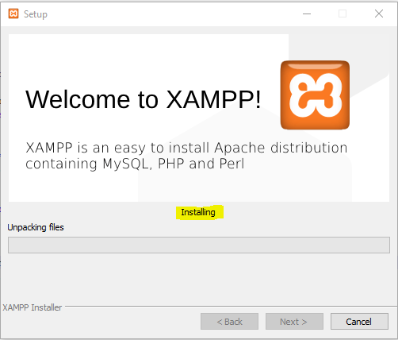
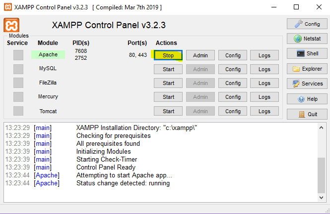
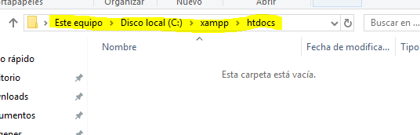
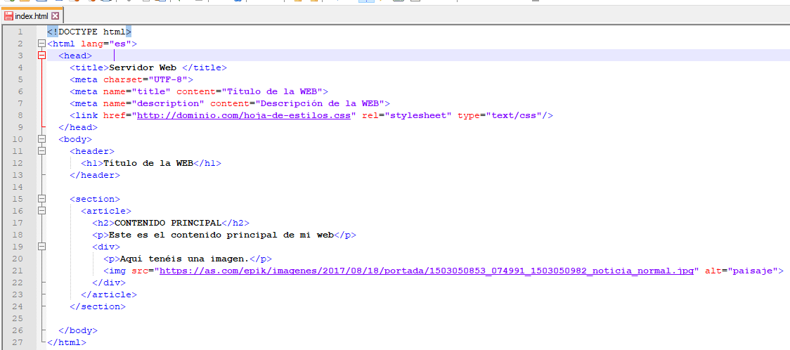
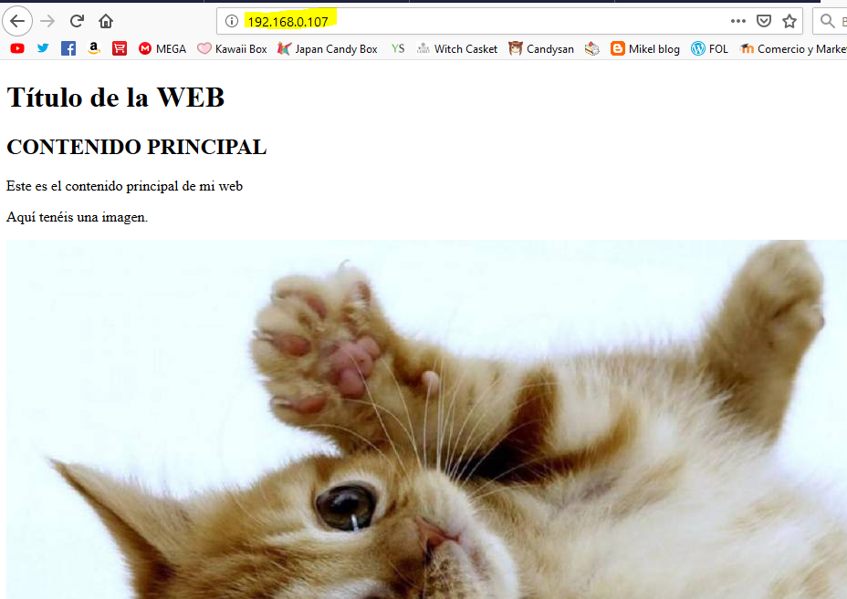
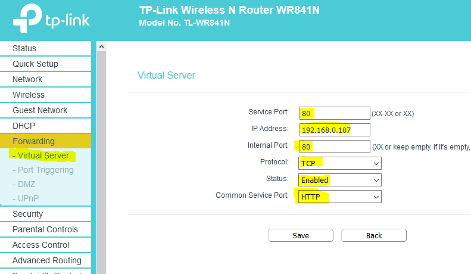
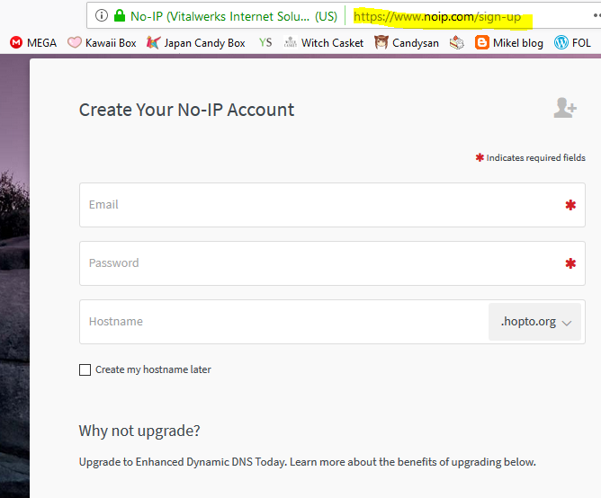
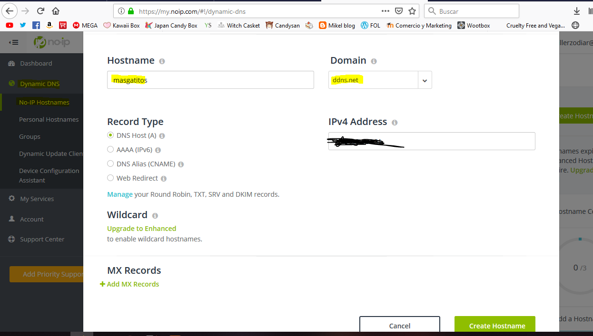
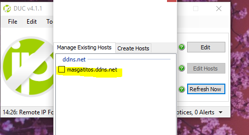
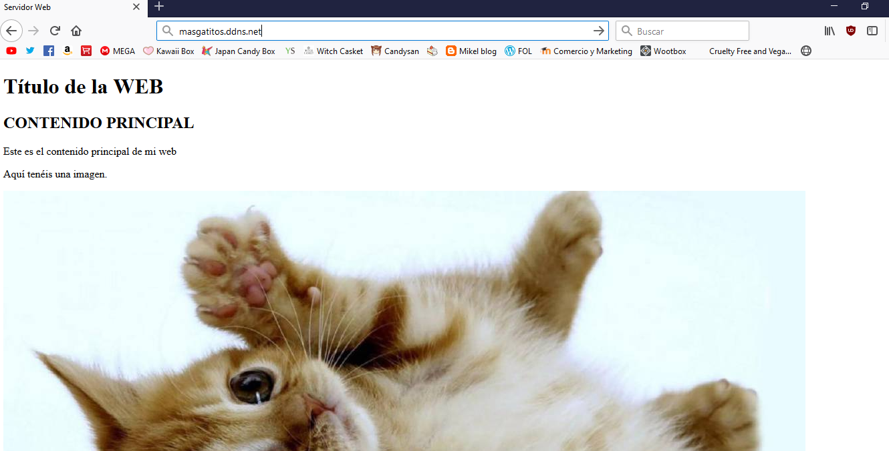

Servidor Web
Presentacion realizada por: Mikel - Cristina - Esteban
Indice
- Definición
- Instalacion de un servidor apache(XAMPP)
- Personalizacion de la pagina de inicio
- Abrir puerto del router
- Darse de alta en un servidor DNS
- Acceso desde el exterior
- Preguntass
- Referncias
Definiciones de Servidor Web
Es un servidor que almacena los documentos que componen una página web (HTML, CSS, PHP…) y se la proporciona al usuario para que la visualice completa en su navegador de Internet.
Siguinte hasta que comience la instalacion:

Cunado haya terminado solo hay que darle a start y ya iniciara nuestro servidor apache:

Personalizar pagina de inicio:
Para ello debe ir a:

Creamos un archivo index.html para poner de ejemplo:

Entramos a nuestra ip para ver como queda:

Acceder a nuestro router para abrir el puerto 80 y mandar la conexiones a nuestro equipo:

Nos daremos de alta en algun servicio DNS para acceder desde un dominio:

Una vez rgistrado iremos al apartado de Dynamic DNS y dentro de Hostnames:

Descargamos es software de no-ip e iniciamos:

Accedemos a nuestra url:
